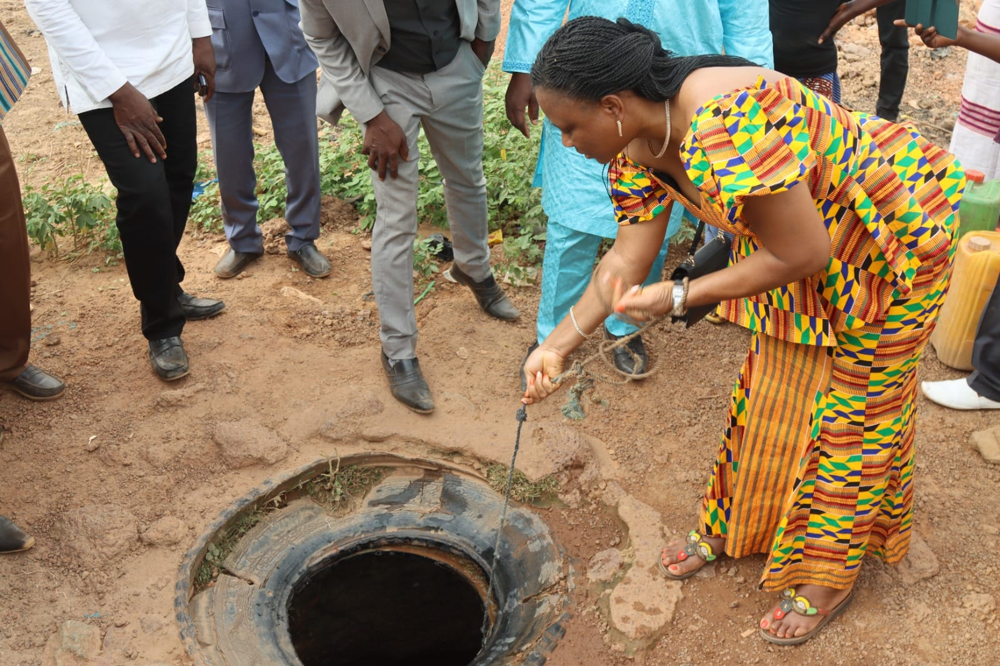

Le Puit Magique de Fada N'Gourma est une légende fascinante ancrée dans la culture locale de cette ville située à l'est du Burkina Faso.
Légende et Histoire
Pour les visiteurs intéressés par la culture locale et les traditions, le Puit Magique offre une opportunité unique de se plonger dans le
folklore et la spiritualité de Fada N'Gourma. C'est un lieu qui incite à la réflexion et à la connexion avec les coutumes ancestrales de la
région.
Ce puits qui ne tarit jamais quelle que soit la sécheresse. Ce puits est nommé puits de « De Gaulle » parce que celui qui l’a creusé avait
la même taille que DE GAULLE.
- Origine et Pouvoirs :
- Le Puit Magique est dit avoir des capacités spéciales, souvent associées à des bénédictions, à la chance et à la guérison.
- Les habitants croient que l'eau du puits possède des propriétés curatives et peut apporter la prospérité à ceux qui y boivent
ou qui l'utilisent pour des rituels.
- Rituals et Pratiques :
- Les visiteurs et les résidents locaux peuvent se rendre au puit pour effectuer des rituels et des prières, demandant la santé,
la réussite ou d'autres bénédictions spécifiques.
- Les cérémonies autour du puit impliquent parfois des offrandes et des gestes symboliques pour attirer les faveurs des esprits
ou des forces mystiques associées au puit.
- Cultural Significance :
- Le Puit Magique joue un rôle important dans la culture locale, non seulement en tant que site de vénération spirituelle,
mais aussi en tant que point de rassemblement communautaire où les traditions et les histoires sont partagées.
- Il est souvent mentionné dans les festivals et les événements culturels de Fada N'Gourma, renforçant ainsi son importance
culturelle et symbolique.
En résumé, le Puit Magique de Fada N'Gourma est bien plus qu'une simple source d'eau. C'est un symbole de la richesse culturelle et
spirituelle de la région, offrant aux visiteurs une immersion dans une tradition séculaire imprégnée de mystère et de respect pour les forces
naturelles et spirituelles.
